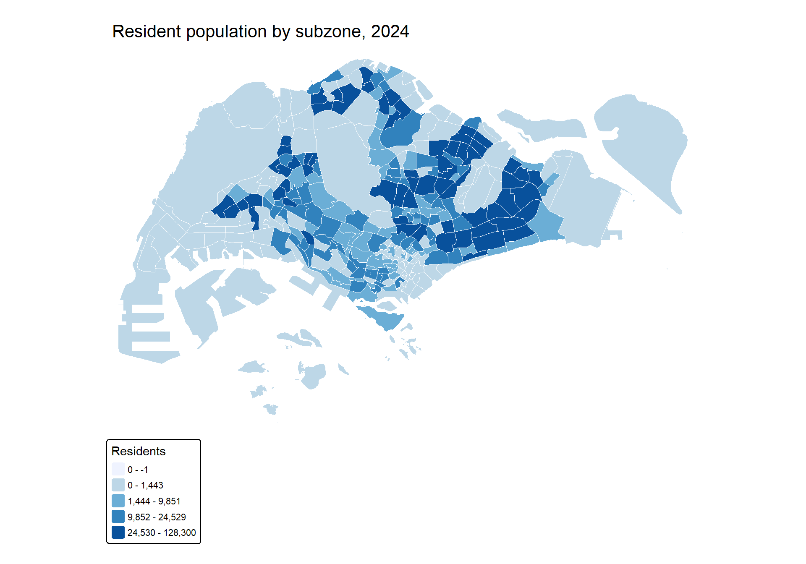
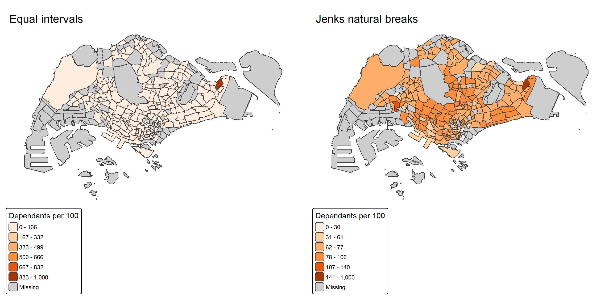
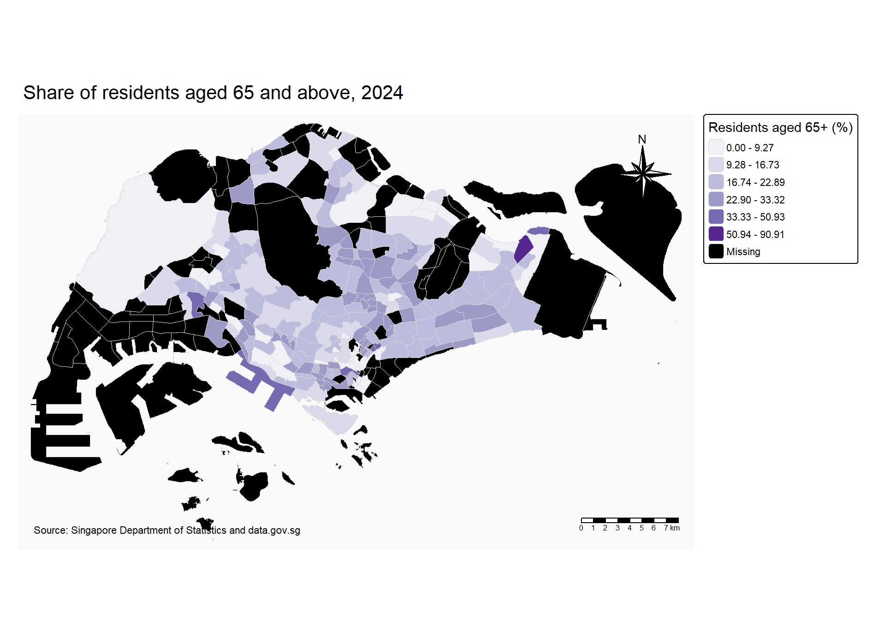
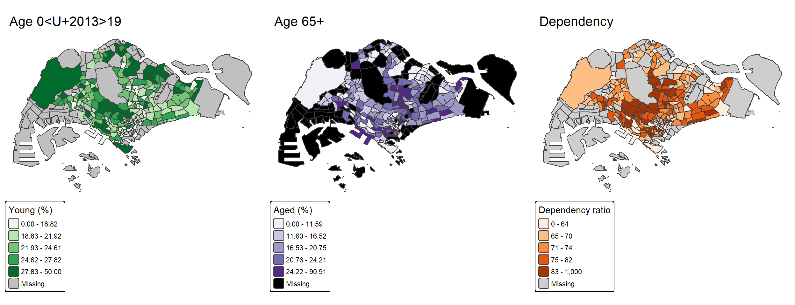

pacman::p_load(
sf,
tidyverse,
rvest,
tmap,
knitr
)
tmap_mode("plot")Hands-on Exercise 1(2): Thematic Mapping and Geovisualisation
Overview
This hands-on exercise develops a reproducible thematic-mapping workflow with sf, tidyverse, and tmap. I prepare 2024 resident population data, join it to Singapore’s Master Plan 2019 subzones, and design choropleth maps that communicate demographic patterns.
The workflow follows Chapter 2: Thematic Mapping and GeoVisualisation with R, using the same Master Plan 2019 KML boundary and June 2024 population dataset specified in the chapter.
Learning objectives
By the end of this exercise, I should be able to:
- prepare demographic variables from a detailed population table;
- join aspatial attributes to a spatial boundary layer;
- produce choropleth maps with suitable classification methods and palettes;
- improve map layout, titles, legends, and explanatory elements; and
- compare several related indicators using small multiples.
Getting started
Loading the R packages
Importing the data
extract_kml_value <- function(description, field_name) {
attributes <- description |>
read_html() |>
html_table(fill = TRUE) |>
pluck(1)
names(attributes)[1:2] <- c("field", "value")
result <- attributes |>
filter(field == field_name) |>
pull(value)
if (length(result) == 0) NA_character_ else result[[1]]
}
mpsz <- st_read(
"data/geospatial/MasterPlan2019SubzoneBoundaryNoSeaKML.kml",
quiet = TRUE
) |>
mutate(
SUBZONE_N = map_chr(
Description,
~ extract_kml_value(.x, "SUBZONE_N")
),
PLN_AREA_N = map_chr(
Description,
~ extract_kml_value(.x, "PLN_AREA_N")
),
REGION_N = map_chr(
Description,
~ extract_kml_value(.x, "REGION_N")
)
) |>
select(SUBZONE_N, PLN_AREA_N, REGION_N) |>
st_make_valid() |>
st_transform(3414)
pop2024 <- read_csv(
"data/aspatial/respopagesextod2024.csv",
show_col_types = FALSE
)tibble(
data = c("Subzone boundaries", "Population records"),
observations = c(nrow(mpsz), nrow(pop2024)),
year = c(2019, 2024)
) |>
kable()| data | observations | year |
|---|---|---|
| Subzone boundaries | 332 | 2019 |
| Population records | 100928 | 2024 |
Preparing the population indicators
The source table records planning area, subzone, five-year age group, sex, type of dwelling, population, and year. Each resident belongs to one age, sex, and dwelling category, so the detailed records can be summed to subzone level.
pop2024 |>
glimpse()Rows: 100,928
Columns: 7
$ PA <chr> "Ang Mo Kio", "Ang Mo Kio", "Ang Mo Kio", "Ang Mo Kio", "Ang Mo K~
$ SZ <chr> "Ang Mo Kio Town Centre", "Ang Mo Kio Town Centre", "Ang Mo Kio T~
$ AG <chr> "0_to_4", "0_to_4", "0_to_4", "0_to_4", "0_to_4", "0_to_4", "0_to~
$ Sex <chr> "Males", "Males", "Males", "Males", "Males", "Males", "Males", "M~
$ TOD <chr> "HDB 1- and 2-Room Flats", "HDB 3-Room Flats", "HDB 4-Room Flats"~
$ Pop <dbl> 0, 0, 10, 20, 0, 40, 0, 0, 0, 0, 10, 20, 0, 30, 0, 0, 0, 10, 10, ~
$ Time <dbl> 2024, 2024, 2024, 2024, 2024, 2024, 2024, 2024, 2024, 2024, 2024,~Defining broad age groups
For this exercise, I define:
- Young: age 0–24;
- Economically active: age 25–64; and
- Aged: age 65 and above.
young_ages <- c(
"0_to_4", "5_to_9", "10_to_14", "15_to_19",
"20_to_24"
)
active_ages <- c(
"25_to_29", "30_to_34", "35_to_39", "40_to_44",
"45_to_49", "50_to_54", "55_to_59", "60_to_64"
)
aged_ages <- c(
"65_to_69", "70_to_74", "75_to_79", "80_to_84",
"85_to_89", "90_and_over"
)Aggregating by subzone
pop_profile <- pop2024 |>
mutate(
SZ = str_to_upper(SZ),
PA = str_to_upper(PA),
Pop = replace_na(Pop, 0)
) |>
group_by(PA, SZ) |>
summarise(
YOUNG = sum(Pop[AG %in% young_ages]),
ECONOMY_ACTIVE = sum(Pop[AG %in% active_ages]),
AGED = sum(Pop[AG %in% aged_ages]),
TOTAL = sum(Pop),
.groups = "drop"
) |>
mutate(
DEPENDENCY = if_else(
ECONOMY_ACTIVE > 0,
(YOUNG + AGED) / ECONOMY_ACTIVE * 100,
NA_real_
),
PCT_YOUNG = YOUNG / TOTAL * 100,
PCT_AGED = AGED / TOTAL * 100
)
pop_profile |>
arrange(desc(TOTAL)) |>
slice_head(n = 10) |>
mutate(
DEPENDENCY = round(DEPENDENCY, 1),
PCT_YOUNG = round(PCT_YOUNG, 1),
PCT_AGED = round(PCT_AGED, 1)
) |>
kable(
caption = "Ten most populous subzones in the 2024 dataset"
)| PA | SZ | YOUNG | ECONOMY_ACTIVE | AGED | TOTAL | DEPENDENCY | PCT_YOUNG | PCT_AGED |
|---|---|---|---|---|---|---|---|---|
| TAMPINES | TAMPINES EAST | 28610 | 73640 | 26050 | 128300 | 74.2 | 22.3 | 20.3 |
| WOODLANDS | WOODLANDS EAST | 28330 | 60420 | 11210 | 99960 | 65.4 | 28.3 | 11.2 |
| TAMPINES | TAMPINES WEST | 20300 | 48230 | 14880 | 83410 | 72.9 | 24.3 | 17.8 |
| BEDOK | BEDOK NORTH | 16670 | 45210 | 19750 | 81630 | 80.6 | 20.4 | 24.2 |
| YISHUN | YISHUN EAST | 20090 | 43070 | 8840 | 72000 | 67.2 | 27.9 | 12.3 |
| SENGKANG | FERNVALE | 20640 | 40910 | 7590 | 69140 | 69.0 | 29.9 | 11.0 |
| JURONG WEST | YUNNAN | 16460 | 39540 | 10740 | 66740 | 68.8 | 24.7 | 16.1 |
| SENGKANG | RIVERVALE | 16280 | 36980 | 9490 | 62750 | 69.7 | 25.9 | 15.1 |
| JURONG WEST | JURONG WEST CENTRAL | 16360 | 36940 | 8680 | 61980 | 67.8 | 26.4 | 14.0 |
| SENGKANG | SENGKANG TOWN CENTRE | 16070 | 36110 | 8360 | 60540 | 67.7 | 26.5 | 13.8 |
Joining population and boundary data
The spatial file and population table both contain 332 subzones. Converting the subzone names to uppercase provides a direct one-to-one match.
mpsz_pop <- mpsz |>
mutate(SUBZONE_N = str_to_upper(SUBZONE_N)) |>
left_join(
pop_profile,
by = c("SUBZONE_N" = "SZ")
)
join_check <- mpsz_pop |>
st_drop_geometry() |>
summarise(
boundary_subzones = n(),
matched_population = sum(!is.na(TOTAL)),
unmatched_population = sum(is.na(TOTAL))
)
join_check |>
kable()| boundary_subzones | matched_population | unmatched_population |
|---|---|---|
| 332 | 332 | 0 |
Building thematic maps with tmap
A basic choropleth map
The first map shows the total resident population. A sequential palette is appropriate because the variable ranges from lower to higher values.
tm_shape(mpsz_pop) +
tm_polygons(
fill = "TOTAL",
fill.scale = tm_scale_intervals(
style = "quantile",
values = "brewer.blues"
),
fill.legend = tm_legend(title = "Residents"),
col = "white",
lwd = 0.25
) +
tm_title("Resident population by subzone, 2024") +
tm_layout(
frame = FALSE,
legend.outside = TRUE
)
Comparing classification methods
Different classification methods can emphasise different aspects of the same data. The maps below compare equal intervals with Jenks natural breaks.
equal_map <- tm_shape(mpsz_pop) +
tm_polygons(
fill = "DEPENDENCY",
fill.scale = tm_scale_intervals(
style = "equal",
n = 6,
values = "brewer.oranges"
),
fill.legend = tm_legend(title = "Dependants per 100")
) +
tm_title("Equal intervals") +
tm_layout(frame = FALSE)
jenks_map <- tm_shape(mpsz_pop) +
tm_polygons(
fill = "DEPENDENCY",
fill.scale = tm_scale_intervals(
style = "jenks",
n = 6,
values = "brewer.oranges"
),
fill.legend = tm_legend(title = "Dependants per 100")
) +
tm_title("Jenks natural breaks") +
tm_layout(frame = FALSE)
tmap_arrange(equal_map, jenks_map, ncol = 2)
Quantile classes contain a similar number of subzones per class, equal intervals preserve equal numerical widths, and Jenks breaks seek internally similar groups. The best choice depends on the distribution and the intended message.
Refining the map layout
tm_shape(mpsz_pop) +
tm_polygons(
fill = "PCT_AGED",
fill.scale = tm_scale_intervals(
style = "jenks",
n = 6,
values = "brewer.purples"
),
fill.legend = tm_legend(
title = "Residents aged 65+ (%)"
),
col = "grey85",
lwd = 0.3
) +
tm_title("Share of residents aged 65 and above, 2024") +
tm_compass(type = "8star", position = c("right", "top")) +
tm_scalebar(position = c("right", "bottom")) +
tm_credits(
"Source: Singapore Department of Statistics and data.gov.sg",
position = c("left", "bottom")
) +
tm_layout(
frame = FALSE,
legend.outside = TRUE,
bg.color = "grey98"
)
Small multiples
Small multiples use a consistent design to compare several indicators. Each map below uses quantile classes so that the spatial pattern of each variable remains visible despite different numerical ranges.
young_map <- tm_shape(mpsz_pop) +
tm_polygons(
fill = "PCT_YOUNG",
fill.scale = tm_scale_intervals(
style = "quantile",
values = "brewer.greens"
),
fill.legend = tm_legend(title = "Young (%)")
) +
tm_title("Age 0–19") +
tm_layout(frame = FALSE)
aged_map <- tm_shape(mpsz_pop) +
tm_polygons(
fill = "PCT_AGED",
fill.scale = tm_scale_intervals(
style = "quantile",
values = "brewer.purples"
),
fill.legend = tm_legend(title = "Aged (%)")
) +
tm_title("Age 65+") +
tm_layout(frame = FALSE)
dependency_map <- tm_shape(mpsz_pop) +
tm_polygons(
fill = "DEPENDENCY",
fill.scale = tm_scale_intervals(
style = "quantile",
values = "brewer.oranges"
),
fill.legend = tm_legend(title = "Dependency ratio")
) +
tm_title("Dependency") +
tm_layout(frame = FALSE)
tmap_arrange(
young_map,
aged_map,
dependency_map,
ncol = 3
)
Exploring selected subzones
The following table identifies subzones with high aged shares. Very small populations can create unstable percentages, so I retain subzones with at least 1,000 residents before ranking them.
mpsz_pop |>
st_drop_geometry() |>
filter(TOTAL >= 1000) |>
arrange(desc(PCT_AGED)) |>
select(SUBZONE_N, PLN_AREA_N, TOTAL, PCT_AGED, DEPENDENCY) |>
slice_head(n = 10) |>
mutate(
PCT_AGED = round(PCT_AGED, 1),
DEPENDENCY = round(DEPENDENCY, 1)
) |>
kable(
caption = "Subzones with the highest share of residents aged 65+"
)| SUBZONE_N | PLN_AREA_N | TOTAL | PCT_AGED | DEPENDENCY |
|---|---|---|---|---|
| PEARL’S HILL | OUTRAM | 5180 | 39.2 | 107.2 |
| CHINA SQUARE | OUTRAM | 1210 | 38.0 | 92.1 |
| CRAWFORD | KALLANG | 7770 | 34.2 | 90.4 |
| VICTORIA | ROCHOR | 1650 | 33.3 | 79.3 |
| TELOK BLANGAH RISE | BUKIT MERAH | 11590 | 31.8 | 95.8 |
| LITTLE INDIA | ROCHOR | 3050 | 31.1 | 82.6 |
| HOLLAND DRIVE | QUEENSTOWN | 12030 | 30.2 | 82.0 |
| LORONG 8 TOA PAYOH | TOA PAYOH | 6810 | 29.8 | 86.1 |
| TELOK BLANGAH WAY | BUKIT MERAH | 8450 | 29.7 | 87.4 |
| BUKIT HO SWEE | BUKIT MERAH | 13500 | 29.3 | 85.2 |
Optional interactive map
Changing to view mode produces a zoomable and clickable map. This code is shown for further exploration but is not executed during the normal website render.
tmap_mode("view")
tm_shape(mpsz_pop) +
tm_polygons(
fill = "DEPENDENCY",
fill.scale = tm_scale_intervals(
style = "jenks",
values = "brewer.oranges"
),
fill.legend = tm_legend(title = "Dependency ratio"),
popup.vars = c(
"Subzone" = "SUBZONE_N",
"Planning area" = "PLN_AREA_N",
"Population" = "TOTAL",
"Aged share (%)" = "PCT_AGED"
)
)Reflection
The exercise demonstrates that a thematic map is shaped by choices made before plotting: variable definitions, name matching, treatment of missing values, class intervals, and colour palettes. Classification methods should therefore be selected deliberately and reported clearly rather than treated as purely visual settings.